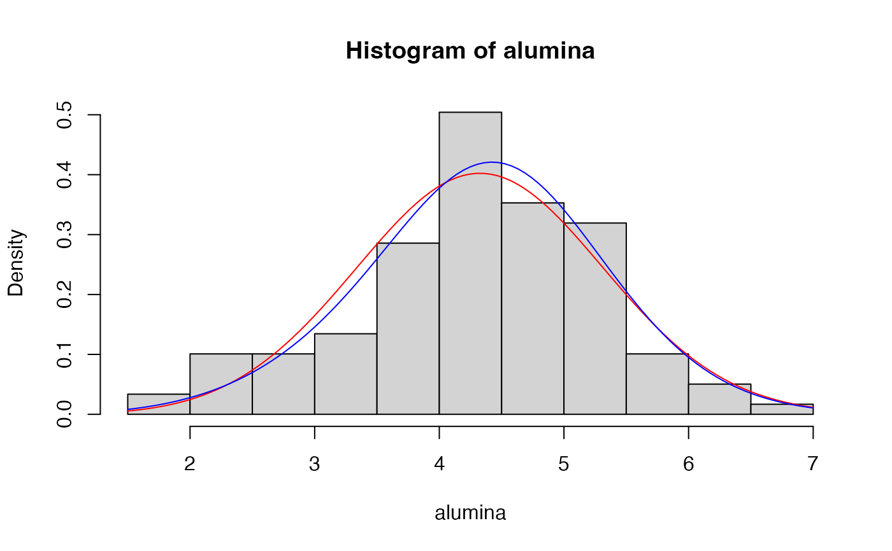

The function MCWEI() defines the Modified Cosine-Weibull (MCWEI) distribution, a three parameter
distribution, for a gamlss.family object to be used in GAMLSS fitting
using the function gamlss().
Value
Returns a gamlss.family object which can be used to fit a MCWEI distribution in the gamlss() function.
Details
The Modified Cosine-Weibull with parameters mu, sigma and nu
has density given by
\( f(x | \mu, \sigma ,\nu) = \frac{\pi \mu \sigma \nu x^{\mu -1} e^{-\sigma x^{\mu}} \cos(\frac{\pi}{2} e^{-\sigma x^{\mu}})\sin(\frac{\pi}{2} e^{-\sigma x^{\mu}})}{e^{\nu} -1} \cdot e^{\nu \left( 1- \cos^2(\frac{\pi}{2} e^{-\sigma x^{\mu}}) \right) } \)
for \(x > 0\), \(\mu>0\), \(\sigma>0\) and \(\nu \neq 0\).
References
Su, R., Aloraini, N. M., Alkhathami, A. A., Alshanbari, H. M., & Khalifa, H. A. E. W. (2025). A new statistical distribution: Its empirical exploration using the reliability and lifespan data in fashion industry. Alexandria Engineering Journal, 116, 660-671.
Examples
# Example 1
# Generating some random values with
# known mu, sigma and nu
true_mu <- 2.2
true_sigma <- 1.2
true_nu <- 10
y <- rMCWEI(n=1000, mu=true_mu, sigma=true_sigma, nu=true_nu)
# Fitting the model
require(gamlss)
mod1 <- gamlss(y~1, sigma.fo=~1, family=MCWEI,
control=gamlss.control(n.cyc=1000))
#> GAMLSS-RS iteration 1: Global Deviance = -1318.358
# Extracting the fitted values for mu, sigma and nu
# using the inverse link function
exp(coef(mod1, what="mu"))
#> (Intercept)
#> 2.35693
exp(coef(mod1, what="sigma"))
#> (Intercept)
#> 1.692704
1 / coef(mod1, what="nu")
#> (Intercept)
#> 6.846889
# Example 2
# Generating random values for a regression model
# A function to simulate a data set with Y ~ MCWEI
gendat <- function(n) {
x1 <- runif(n, min=0.4, max=0.6)
x2 <- runif(n, min=0.4, max=0.6)
mu <- exp(1 + 3 * x1)
sigma <- exp(2 + 1 * x2)
nu <- 5
y <- rMCWEI(n=n, mu=mu, sigma=sigma, nu=nu)
data.frame(y=y, x1=x1, x2=x2)
}
set.seed(1234)
dat <- gendat(n=100)
mod2 <- gamlss(y~x1, sigma.fo=~x2, nu.fo=~1,
family=MCWEI, data=dat,
control=gamlss.control(n.cyc=1000, trace=FALSE))
summary(mod2)
#> Warning: summary: vcov has failed, option qr is used instead
#> ******************************************************************
#> Family: c("MCWEI", "Modified Cosine-Weibull")
#>
#> Call: gamlss(formula = y ~ x1, sigma.formula = ~x2, nu.formula = ~1,
#> family = MCWEI, data = dat, control = gamlss.control(n.cyc = 1000,
#> trace = FALSE))
#>
#> Fitting method: RS()
#>
#> ------------------------------------------------------------------
#> Mu link function: log
#> Mu Coefficients:
#> Estimate Std. Error t value Pr(>|t|)
#> (Intercept) 0.9092 0.1558 5.834 6.98e-08 ***
#> x1 3.4871 0.3187 10.943 < 2e-16 ***
#> ---
#> Signif. codes: 0 ‘***’ 0.001 ‘**’ 0.01 ‘*’ 0.05 ‘.’ 0.1 ‘ ’ 1
#>
#> ------------------------------------------------------------------
#> Sigma link function: log
#> Sigma Coefficients:
#> Estimate Std. Error t value Pr(>|t|)
#> (Intercept) 2.8702 0.5914 4.853 4.59e-06 ***
#> x2 0.6371 1.1627 0.548 0.585
#> ---
#> Signif. codes: 0 ‘***’ 0.001 ‘**’ 0.01 ‘*’ 0.05 ‘.’ 0.1 ‘ ’ 1
#>
#> ------------------------------------------------------------------
#> Nu link function: inverse
#> Nu Coefficients:
#> Estimate Std. Error t value Pr(>|t|)
#> (Intercept) 0.23011 0.02642 8.708 7.12e-14 ***
#> ---
#> Signif. codes: 0 ‘***’ 0.001 ‘**’ 0.01 ‘*’ 0.05 ‘.’ 0.1 ‘ ’ 1
#>
#> ------------------------------------------------------------------
#> No. of observations in the fit: 100
#> Degrees of Freedom for the fit: 5
#> Residual Deg. of Freedom: 95
#> at cycle: 437
#>
#> Global Deviance: -358.1565
#> AIC: -348.1565
#> SBC: -335.1306
#> ******************************************************************
1 / coef(mod2, what="nu") # To check the estimation for nu
#> (Intercept)
#> 4.345663
# Example 3
# The data represent fracture toughness (a measure of resistance to fracture,
# in MPa * m^1/2)
# Su et al. (2025) page 667
alumina <- c(
5.50, 5.00, 4.90, 6.40, 5.10, 5.20, 5.20, 5.00, 4.70, 4.00,
4.50, 4.20, 4.10, 4.56, 5.01, 4.70, 3.13, 3.12, 2.68, 2.77,
2.70, 2.36, 4.38, 5.73, 4.35, 6.81, 1.91, 2.66, 2.61, 1.68,
2.04, 2.08, 2.13, 3.80, 3.73, 3.71, 3.28, 3.90, 4.00, 3.80,
4.10, 3.90, 4.05, 4.00, 3.95, 4.00, 4.50, 4.50, 4.20, 4.55,
4.65, 4.10, 4.25, 4.30, 4.50, 4.70, 5.15, 4.30, 4.50, 4.90,
5.00, 5.35, 5.15, 5.25, 5.80, 5.85, 5.90, 5.75, 6.25, 6.05,
5.90, 3.60, 4.10, 4.50, 5.30, 4.85, 5.30, 5.45, 5.10, 5.30,
5.20, 5.30, 5.25, 4.75, 4.50, 4.20, 4.00, 4.15, 4.25, 4.30,
3.75, 3.95, 3.51, 4.13, 5.40, 5.00, 2.10, 4.60, 3.20, 2.50,
4.10, 3.50, 3.20, 3.30, 4.60, 4.30, 4.30, 4.50, 5.50, 4.60,
4.90, 4.30, 3.00, 3.40, 3.70, 4.40, 4.90, 4.90, 5.00
)
mod3 <- gamlss(alumina~1, sigma.fo=~1, family=MCWEI,
control=gamlss.control(n.cyc=1000))
#> GAMLSS-RS iteration 1: Global Deviance = 341.5339
# Extracting the fitted values for mu, sigma and nu
# using the inverse link function
exp(coef(mod3, what="mu"))
#> (Intercept)
#> 3.200389
exp(coef(mod3, what="sigma"))
#> (Intercept)
#> 0.00636299
1 / coef(mod3, what="nu")
#> (Intercept)
#> 0.0001238661
hist(alumina, freq = FALSE)
curve(dMCWEI(x,
mu=exp(coef(mod3, what="mu")),
sigma=exp(coef(mod3, what="sigma")),
nu=1 / coef(mod3, what="nu")),
add=TRUE, col="red")
curve(dMCWEI(x,
mu=2.73329299,
sigma=0.01786388,
nu=-1.89210407),
add=TRUE, col="blue") # Using estimated values of Su et al (2025)

plot(ecdf(alumina))
curve(pMCWEI(x,
mu=exp(coef(mod3, what="mu")),
sigma=exp(coef(mod3, what="sigma")),
nu=1 / coef(mod3, what="nu")),
add=TRUE, col="red")
curve(pMCWEI(x,
mu=2.73329299,
sigma=0.01786388,
nu=-1.89210407),
add=TRUE, col="blue") # Using estimated values of Su et al (2025)